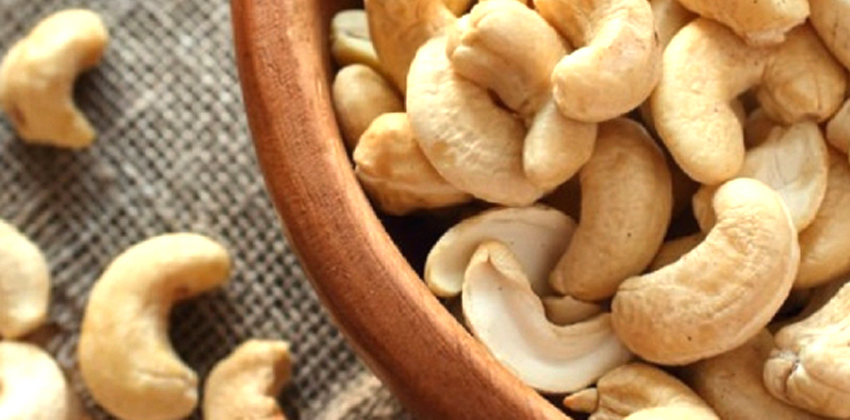
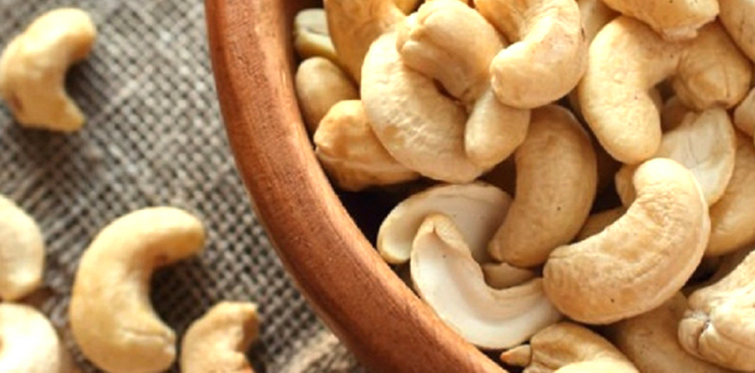

En Côte d’Ivoire, les principales richesses sont concentrées au sud au détriment du nord où les terres sont moins favorables à l’agriculture avec la désertification progressive. L’anacardier est un arbre qui a été introduit dans les années 1970 pour reboiser ces zones sahéliennes et ralentir l’avancée du désert.
La Côte d’Ivoire est aujourd’hui le premier producteur mondial et le premier exportateur d’anacarde. Cette performance est le fruit d’une réforme lancée en 2013 par les autorités gouvernementales, qui avait essentiellement pour but d’optimiser la production et la qualité, afin de garantir un prix plus rémunérateur aux producteurs.
| Produits | Quantité | Prix |
|---|---|---|
| Anacarde Brute | 1 Kilo | 315 FCFA |
| Anacarde semi transformé | 1 Kilo | 450 FCFA |
| Anacarde transformé | 1 Kilo | 550 FCFA |
Anacarde-Pro, nous produisons nos propres noix de cajou de manière artisanales et locales.
Nos noix de cajou ne sont pas cueillies, mais ramassées une fois à complète maturité. Nous les proposons en circuit court pour vous garantir un maximum de fraîcheur.